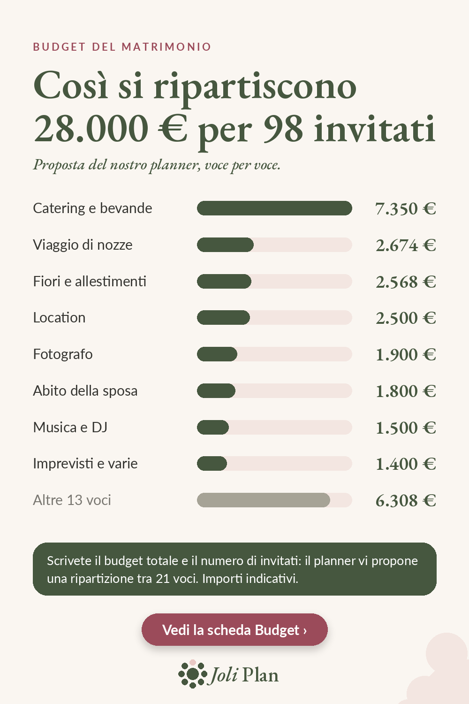

Budget del matrimonio
Budget del matrimonio: come ripartire 28.000 € per 98 invitati
Con 28.000 € e 98 invitati, la domanda non è «bastano?», ma «dove va ogni euro?». Ecco la ripartizione proposta dal nostro planner, voce per voce. Sono importi indicativi per cominciare, non prezzi reali: adattateli ai vostri preventivi.

La ripartizione voce per voce
| Voce | Importo |
|---|---|
| Catering e bevande | 7.350 € |
| Viaggio di nozze | 2.674 € |
| Fiori e allestimenti | 2.568 € |
| Location | 2.500 € |
| Fotografo | 1.900 € |
| Abito della sposa e accessori | 1.800 € |
| Musica e DJ | 1.500 € |
| Imprevisti e varie | 1.400 € |
| Altre 13 voci | 6.308 € |
Cosa ricordare
Il catering è la voce più pesante: 7.350 €, circa un quarto del totale. È qui che un cambio di data, di menu o di numero di invitati si fa sentire di più.
Tenete una voce «imprevisti» di circa il 5%. Assorbe le piccole dimenticanze senza toccare il resto.
Come adattare queste cifre al vostro matrimonio
- Sostituite ogni importo con il vostro primo preventivo appena lo avete.
- Se una voce sfora, togliete la differenza da un'altra voce, non dagli imprevisti.
- Ricalcolate quando cambia il numero di invitati: il catering segue il numero dei coperti.
- Tenete tutte le voci in una sola pagina per vedere subito cosa è già assegnato.